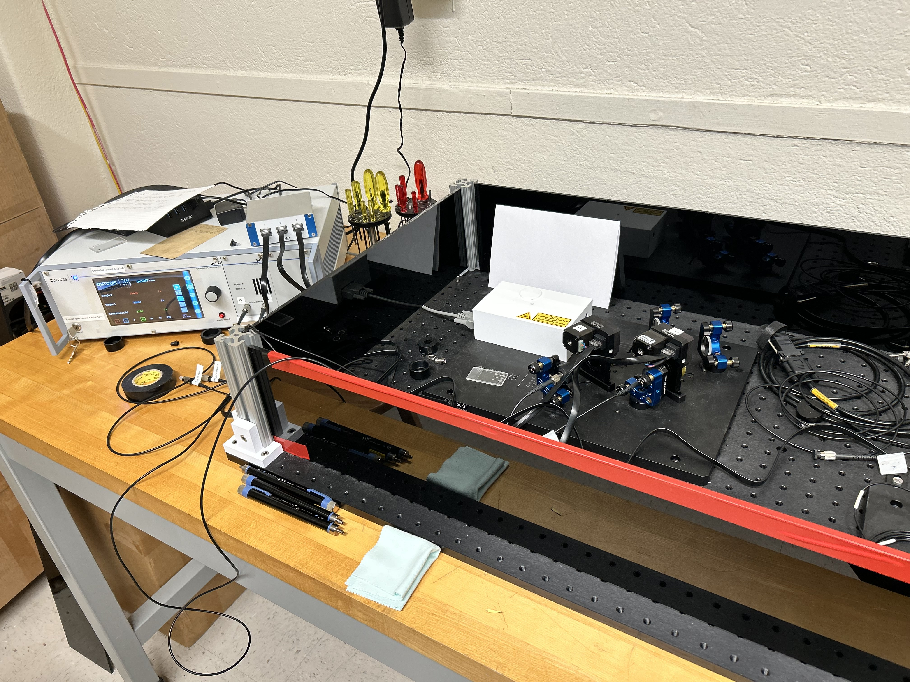
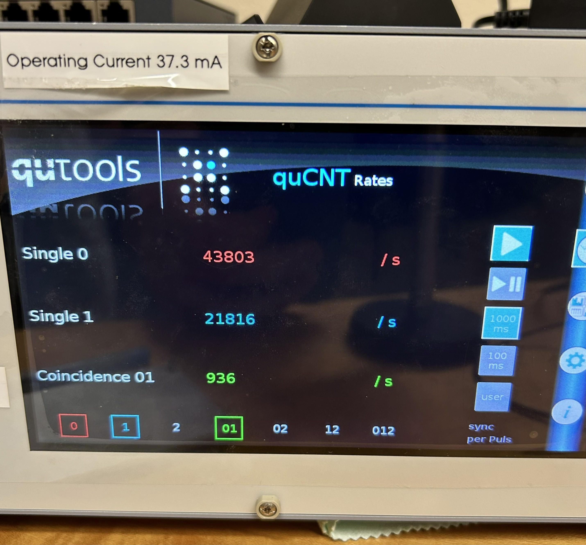
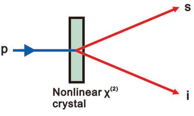

Engineering Projects
Fiber Optic Spectroscopy
Skills: Fiber Optics, Spectra Data Analysis, CAD
Some friends and I tried our hands at upgrading the Pupin Rutherford Dome Telescope through multi-object spectroscopy. We had just installed a field-derotator on the telescope, and we thought this would be a pretty cool use of it!

Our Design Hooked Up To The Telescope
What I did: Besides the prelimanary research phase, the fabrication was split into
a few categories: the fibers, the plug plates, and the spectrograph. The fibers were simple, but tedious --
they consisted of measuring, cutting, polishing, and attaching ferrules. Making sure all the fibers all
exactly the same length in cutting was tedious but simple enough -- the real fun is polishing.
We ran the fibers through a 6 stage polishing process, with only a few fallen soldiers along the way
(they are super fragile okay). The plug plates were created using a projection of our target star field
onto our telescope's focal plane, plus some distortion calculations from mirror position. We drilled some
holes into our aluminum sheet, plugged those fibers into there, and had ourselves an imaging device.
The spectrograph materials (along with a bunch else, plus some extremely generous guidance) were given
to us by Prof. Schiminovich, which we assembled and calibrated in his lab. We tested our fibers out,
took some pictures for analysis (see paper for both), and, satistfied, took it up to the dome for testing!

Neon lamp seen in background

Technical details: The plug plate was creating using a gnomonic projection to determine where
to drill, with added corrections because of mirror distortion (to the first order). These were done using a
python script. Initial fabrication attempts were done using a water jet, but that proved insufficiently accurate.
We transitioned to a drill press for our 1.25mm punches. Further work should consider a precision CNC.
Our fiber design consisted of 10 spectra fibers and one larger imaging fiber, used for tracking and telescope
corrections. We cut, insulated, ferruled, and polished the fibers, ensuring focal alignment.
Our calibration measurements from white light and a neon lamp were done in a python script. Individual bands of
emission spectra were selected by isolating specific pixel ranges, after which we performed a best fit to find the most
illuminated lines. We followed with dispersion relation calculations outlined in the paper.
Results: Our results were.. mixed. Our system was able to observe point sources like Arcturus, but our target star field
was eluding us. I assume design factors were at play here, most prominantly a misalignment of ferrule/fiber
positioning at the focal plane. Previous testing had hinted at this, and our best estimates is a focal plane
misalignment of 3-5mm.
However, not all was lost, and we still obtained some interesting calibration measurements using white light and
a neon lamp. You can check out the specifics in the paper, but essentially we isolated bands of spectra and calculated
the dispersion relations, finding the wavelength centers and reciprocal linear dispersions.
Full writeup:
Quantum State Tomography & Testing Bell's Inequality
Skills: Quantum Optics, Hardware Control
This was a final project for a quantum computing class I took, done with a friend in the class. Utilizing a photon entanglement setup on an optic table, we did some cool experiments.

The Setup! (White box holds laser, wave plates, and BBO crystal)
What I did: The little white box in the picture above conveniently generates a pair of |HH>+|VV> entangled photons, which allows us to do all sorts of experiments. We decided to test if we could violate Bell's inequality, which we did by measuring correlations (# of incident entangled photons on our detectors) and running some calculations in python. We were then curious about the polarization state of the system, and its coherence, so we performed single photon tomography as a way to test the effectiveness of the laser/BBO setup. We managed to reconstruct the density matrix of the individual photons, and compared these maximally mixed states with the state from a pure, non-entangled beam.

Single incidences on top, entangled detections below

How we entangle polarized photons
Technical details: The source is a pair of polarization-entangled photon pairs pumped by a continuous wave laser at 405nm, entangled via spontaneous parametric down-conversion through a pair of BBO crystals (entanglement generated through their high nonlinearity). This comes with a whole optic assembly of half-wave plates and compensation crystals to produce a maximally entangled state at a single group-velocity. This source is fiber coupled to measure correlations at high fidelity, with linear polarizers placed just before the detectors for analysis. The experiments themselves involved tinkering with the various mirrors and polarizers on the table, ensuring high correlations (walking the mirrors) and testing different angles of polarization to collect data. The measurements we needed to take, and why, are derived in the paper below.
Results: We proved quantum mechanics! We achieved an S value of 2.297, which, according to Bell's inequality (or CHSH inequality), means the predictions of quantum mechanics are correct, and local realism isn't! Einstein would be real spooked. Our tomography showed non-definite single photon polarization (from comparison between pure and mixed density matrixes), indirectly showing the non-locality we proved before. A full rundown of all this is in the paper below, check it out! It's pretty cool.
Full writeup:
Project Three Name
Skills: Embedded Systems, C++, PCB Design
Short description: One or two sentences describing what this project is and why you built it.

Caption for this photo
What I did: Describe your specific role and contributions to the project.
Technical details: Describe the tools, methods, materials, or design choices involved.
Results: Describe the outcome — what worked, what you measured, or what you learned.
Code: View on GitHub